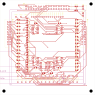
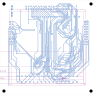

A3 单页原理图：全标签连线（无飞线）。U1–U6 = 通道调理 IC，J5 = 36Pin 采集口，JA/JB = 2×10 排针。图大可 新窗口打开 后滚轮缩放。

根因（已实证源码）：FE-16 的 PCB 不是手画的，是全自动生成：
fe16_design.py（数据唯一事实源）→ gen_dsn.py → fe16_router.py（自研 A* 布线器，0.5mm 栅格、双层）→ 回写 KiCad。
布线器只产出走线 segments + 跨层过孔 vias；GND / VCC3V3 是作为普通网络最后布线的
（fe16_router.py 中 power = ("VCC3V3","GND")）。整个管线没有 zone 生成步骤。
电气现状：GND 靠双面 0.25mm 走线 + 164 个 0.6/0.3mm 过孔连接全板。这块板是 3.3V 数字缓冲板 （LVC07/LVC14），拓扑扫描为准静态、回读边沿 μs 级，回路电流 mA 级——能可靠工作。
铺铜能带来什么：更低阻抗的回流路径、EMI 屏蔽、一定的机械/散热冗余。对本板不是必需， 但对参赛演示的信号完整性是加分项。
路 ② 已执行：立创EDA 桌面版工程内已铺双面铺铜（POUR1/POUR2 实心填充），并已从该工程导出投产 Gerber
——瞬迹/pcb/eda_fab/Gerber_xunji_fe16_2026-10-14.zip，层文件核验含铺铜多边形
（顶层 G36×8、底层 G36×4），钻孔 164 via / 295 PTH / 4 NPTH 与 PCB 源逐项吻合。
已通过 EDA 内部 API 读取全部 164 个过孔对象：primitiveType = "Via"（类型正确），
钻 12mil / 盘 24mil（= 0.3 / 0.6mm，嘉立创标准工艺），坐标与 KiCad 源逐点吻合。
关键字段 solderMaskExpansion: {top: -1000, bottom: -1000}——负值 = 阻焊内缩把孔盖住（盖油过孔），
EDA 将盖油孔渲染为绿色阻焊点。而你在 EDA 里手动打的过孔该参数默认 null（开窗），露出铜环显示铜色——
两者只差这一个阻焊属性。盖油是 KiCad→EDA 导入时的选项（viaSolderMaskExpansion），对钻孔/电气零影响，
还更防焊锡渗漏；要和手动孔一致，重新导入时把该选项改为「开窗」即可。
DRC 关联（已修复）：这批过孔曾与双面铺铜触发 9 条「钻孔-铺铜」间距报错——铺铜填充以多边形逼近孔边界 （孔径+10mil），与孔实际边缘存在约 0.1mil 的系统差，重建铺铜无法消除。已在「设计规则→规则管理→安全间距」 将钻孔 × 铺铜/内电层一格由 0.254mm 调整为 0.175mm（与同规则内其它孔对一致，仍是嘉立创工艺能力的数倍）， DRC 间距错误清零。
板上另一种孔——H1–H4 安装孔（NPTH，pad 3.2 = drill 3.2 无铜环，四角）——在 EDA 里显示为深色圆， 属机械孔正常显示；安装孔必须 NPTH，否则 M3 螺丝会把 GND 与机壳意外导通。
核对方法：EDA 里点选绿孔 → 属性面板显示「过孔」；点四角安装孔 → 显示「孔」。
| 分区 | 位号 | 功能 |
|---|---|---|
| 采集口 J5（上边居中） | J5 = IDC 2×18（36Pin） | 与 FPGA 主控板（EGO1）的唯一连接：针 1–16 = ACTRL0..15（FPGA→前端激励），针 17–32 = BRW0..15（前端→FPGA 回读），33/34 = GND，35/36 = VIN_J5 供电 |
| A 路驱动（左半） | U1–U3 = SN74LVC07A（6路开漏缓冲），RU1–16 上拉 10k，RS1–16 串阻 330Ω | 把 FPGA 的 ACTRL 信号变成「拉低/释放」的开漏驱动打到线束 A 端；RU 保证 FPGA 复位或悬空时输入为高=释放，线束不被误驱动；RS 抗短路/限流保护 |
| B 路回读（右半） | U4–U6 = SN74LVC14A（6路施密特反相），RP1–16 上拉 4.7k | 线束 B 端经 RP 上拉后由 LVC14 施密特整形去抖、反相，输出干净的数字电平 BRWn 送回 FPGA；施密特特性滤除线束上的慢边沿/毛刺 |
| A/B 端子 | JA（左）= A 端 DUT 20Pin，JB（右）= B 端 DUT 20Pin | 接被测线束两端；针 1–16 = 信号，17–20 = NC/KEY（防呆，故意不连网） |
| 电源区（右上角） | RCT1 = 0Ω，C7 = 10μF，JP1 + EXT1 | J5-35/36 的 VIN_J5 经 RCT1（整板电流断点，测功耗时取下串电流表）得到 VCC3V3；C7 总旁路；JP1/EXT1 为备用外部 3.3V 入口，与 RCT1 互斥防倒灌 |
| 去耦 | C1–C6 = 100nF | 每颗 IC 电源脚旁一颗，就近滤除高频开关噪声 |
| 测试点 | TP1–51 | TP1–16 = A 路（LVC07 输出后）、TP17–32 = B 路（LVC14 输入前）、TP33–48 = BRW（LVC14 输出后）、TP49–51 = VCC3V3/GND/VIN_J5 电源——全链路可探针 |
| 安装孔 | H1–H4 | 四角 φ3.2 NPTH，M3 螺丝固定（四角对称，96×96mm 内缩 4mm） |
导通判定（V1.9 P048，已冻结）：A 拉低 → LVC07 把线束拉低 → LVC14 输入低 → 输出高 → b_raw=1 → 导通；
线束开路 → B 由 RP 上拉 → LVC14 输出低 → b_raw=0 → 开路。
真实前端本身已完成极性定义，FPGA 侧不做任何反相（反相只允许出现在 loopback 测试顶层）。
为什么这么设计：A 路用开漏（LVC07）而非推挽——多路可线与、断电安全、不会和线束对端打架； B 路用施密特反相（LVC14）——线束是长导线，边沿慢且带噪，施密特迟滞在判决点附近天然抗毛刺， 再叠加 FPGA 内 glitch_filter 双重滤波。静态拓扑扫描得到 16×16 导通矩阵（线怎么接）， μs 级时间戳捕获瞬态开路（线什么时候断）——这正是瞬迹的两个核心能力。
| 决策 | 依据 |
|---|---|
| 96×96mm 四孔板框 | 嘉立创免费券 ≤10×10cm 上限内取最大整数，16 通道布局所需 |
| J5 = 36Pin 分工 | V1.9 §4.1 表3：1–16 ACTRL / 17–32 BRW / 33–34 GND / 35–36 VIN |
| A/B 口 17–20 不连网 | V1.9 §9.1 / 表14：NC/KEY 防呆位 |
| 未用通道处理 | U3 槽4/5 输入接 VCC3V3、U6 槽4/5 输入接 GND，输出悬空（§9 / D8）——防止未用输入浮空振荡耗电 |
| 复位态 a_ctrl_n 全 1 | AGENTS.md §6.2 红线：任何情况下不得在复位期间拉低 A 端 |
| 0.25mm 线宽 / 0.2mm 净距 / 0.6-0.3 过孔 | 嘉立创标准工艺（免费券默认能力内），无特殊加价 |
| 全板自动化生成 | 数据唯一事实源 fe16_design.py ↔ 机检 tests/test_frontend_pcb.py 互为交叉验证；DRC 0 / ERC 0 / pytest 61 全绿 |
| 事项 | 状态 |
|---|---|
| GND 铺铜 | 已补——管线不支持 zone，已在桌面版 EDA 内直接铺双面铺铜（POUR1/POUR2），并已随投产 Gerber 输出 |
| 立创EDA 桌面版工程（xunji_fe16，已实测） | 导入零畸变：板框 Board Outline 多边形 = 0→3779.5276 mil = 精确 96×96mm；122 元件 / 164 过孔 / 走线 0.25mm 与源逐项吻合。可在桌面版继续设计、铺铜甚至下单 |
| 立创EDA 网页版工程（xunji_fe16_kicad） | 板框畸变（96×96 → 59.2×54.9mm，网页版导入器 bug），仅作云端原理图评审/可视化，勿在网页版下单 |
| EDA 侧 DRC 实测（桌面版） | 最终状态：全部(0)，DRC 归零（铁证截图 eda_drc_zero.png）。清零过程：163 条「过孔尺寸」→ 全部 164 个过孔统一为整 mil（钻 12 / 盘 24 = 0.3 / 0.6mm，嘉立创标准工艺）；9 条「钻孔-铺铜间距」（填充多边形逼近的 0.1mil 系统差）→ 规则矩阵 钻孔×铺铜/内电层 0.254→0.175mm；2 条连接性 → touch 网络强制重绑；最后 1 条网表错误的根源——KiCad 导入的坏原理图（符号全在、连线全丢，72 项网表差异：POWER_PWR_FLAG 60 pin ＋ PCB 独有 71 网）曾从工程删除（删除时未勾选「同时删除 PCB」，PCB 铜箔零改动）；全程未执行「导入更新」。2026-10-14 21:44 已通过 文件→工程备份→备份管理 从 xunji_fe16_kicad_2026-10-14-20-00.epro2 恢复——用户手动修改过的原理图（204 条连线）已回到工程并保存（恢复为「保存到已有工程」导入，工程树新增 xunji_fe16_1 板卡分组，内含原理图文档；投产 PCB 所在 xunji_fe16 分组未受影响）。恢复后复跑 DRC：全部(0)，铺铜/走线/164 via 完好（截图 eda_drc_rerun.png / eda_sch_open3.png） |
| 投产文件（本轮产出） | 瞬迹/pcb/eda_fab/Gerber_xunji_fe16_2026-10-14.zip——桌面版 EDA 在 DRC 全部(0) 状态下导出，含双面铺铜；层齐全（GTL/GBL/GTS/GBS/GTO/GBO/GKO + PTH/Via/NPTH 钻孔 + 钢网 GTP + 装配 GTA），钻孔 164 via / 295 PTH / 4 NPTH 与源吻合。贴片坐标 PickAndPlace_xunji_fe16_2026_10_14.xlsx（同目录）。历史版本 pcb/frontend16/xunji_fe16_gerber_96x96.zip（本地 DRC 0/0 产出，提交 3a21521，无铺铜）保留备查 |

